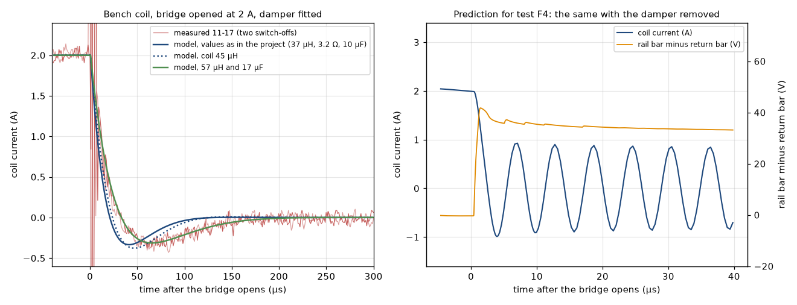
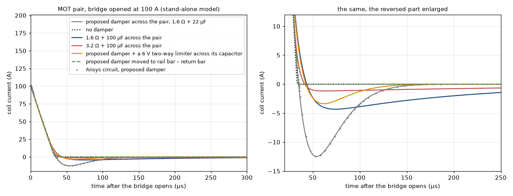
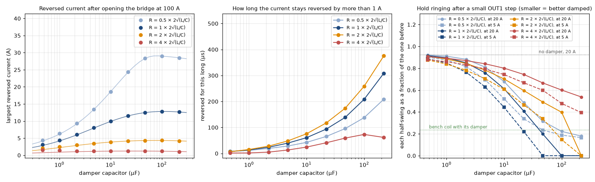
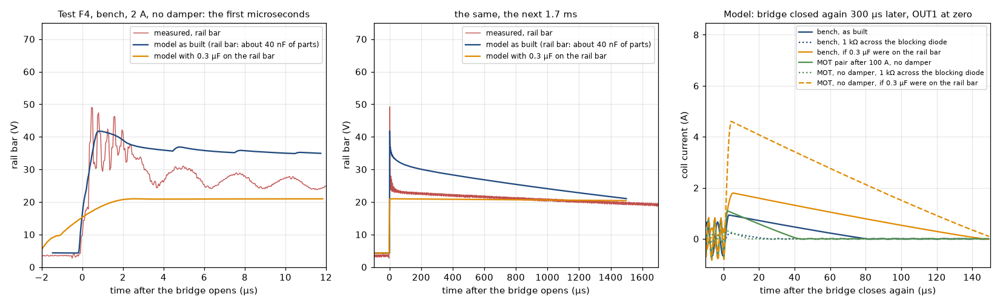

When the bridge is opened at current, the coil current falls fast and then swings negative for a short time: the damper's capacitor was charged during the fall and empties back through the coil. Measured on the bench on 2026-11-17 (−0.3 A after a 2 A switch-off). This page checks the circuit model against that measurement and then asks what happens on the MOT pair at 100 A and which damper keeps the swing small. Bench numbers marked measured are measured; everything about the MOT pair is a model prediction.
| Trace | Fall, 90 % to 2 % | Lowest current | … this long after crossing zero | Back above −0.02 A (after crossing zero) |
|---|---|---|---|---|
| Measured, R3 (smooth curve through the trace) | 29 µs | -0.31 A | 32 µs | 150 µs |
| Measured, R4 (smooth curve through the trace) | 29 µs | -0.33 A | 32 µs | 144 µs |
| Model, values as in the project (37 µH, 3.2 Ω, 10 µF) | 19 µs | -0.33 A | 20 µs | 86 µs |
| Model, coil 45 µH | 23 µs | -0.38 A | 22 µs | 87 µs |
| Model, 57 µH and 17 µF | 31 µs | -0.31 A | 33 µs | 145 µs |
The measured swing is that of a coil, resistor and capacitor in series with a natural frequency of 5.1 kHz and a damping ratio of 0.88. The nominal parts (45 µH, 3.2 Ω, 10 µF) would give 7.5 kHz. With the resistor taken as its marked 3.2 Ω, the trace implies about 57 µH and 17 µF: the product of coil inductance and capacitance is about twice the nominal one. The 10 µF capacitor (non-polarised) and the coil are worth a check with an LCR meter. A coil of 55–60 µH also fits the 11-12 freewheel slope (2 A in 170 µs) if the body diode drops 0.65 V rather than the 0.5 V assumed then.
Prediction for test F4 (damper removed): the current reaches zero in 3 µs; the 5KP30A clamps the rail bar at 42 V above the return bar (peak 1.2 A, 47 µJ). No slow negative swing, but the coil then rings with the stray capacitance of the bridge and varistor: about ±0.9 A at 170 kHz in the model. The model has no loss at that frequency, so there it never dies; on the bench it should die within a few cycles, and the current sensor (100 kHz) and the 1 µs sampling will show it smaller than it is. A scope on the rail bar is the better view.

16 µH, 7.4 mΩ including the coil cable, 100.8 A before the switch. “Ansys” = the full circuit (coil_servo_fast_turnoff.aedt, design mot_ft); “small model” = damper_model.py, which has only the coil, the damper, the body diodes and the 5KP30A and is used for circuits that are not drawn in the Ansys project.
| Damper | From | First below 10 % | Stays within 2 % (2 A) | Stays within 0.5 % (0.5 A) | Largest reversed current | Reversed (more than 1 A) for | 5KP30A peak current | 5KP30A energy | Damper resistor energy | Damper resistor peak power | Damper capacitor peak voltage |
|---|---|---|---|---|---|---|---|---|---|---|---|
| (a) proposed damper, 1.6 Ω + 22 µF across the pair | Ansys | 32 µs | 112 µs | 137 µs | -12.5 A | 89 µs | 159 A | 54 mJ | 30 mJ | 1618 W | 28 V |
| (b) no damper | Ansys | 30 µs | 32 µs | 538 µs | -1.4 A | 95 µs | 191 A | 83 mJ | 0 mJ | 0 W | 0 V |
| (c) 1.6 Ω + 100 µF across the pair | Ansys | 33 µs | 197 µs | 406 µs | -4.3 A | 258 µs | 158 A | 46 mJ | 38 mJ | 1628 W | 8 V |
| (c) 3.2 Ω + 100 µF across the pair | Ansys | 31 µs | 36 µs | 333 µs | -1.2 A | 73 µs | 175 A | 62 mJ | 22 mJ | 823 W | 4 V |
| (d) proposed damper + a 6 V two-way limiter across its capacitor | small model | 32 µs | 88 µs | 121 µs | -3.4 A | 60 µs | 70 A | 45 mJ | 30 mJ | 1551 W | 9 V |
| (d) proposed damper moved to rail bar – return bar | small model | 30 µs | 34 µs | 34 µs | 0.0 A | 0 µs | 71 A | 51 mJ | 19 mJ | 1375 W | 28 V |

The ringing test: OUT1 fixed, a +10 count step, and how fast the ringing that follows dies, written as each half-swing divided by the one before (1 = never dies, 0.3 = gone in two or three swings). As in the bench ringing runs the pass transistors' drain-gate capacitance is set to 17 nF, the value that makes the model ring at the bench's frequencies. The model's ringing dies by itself while the bench's did not, so this test ranks dampers; it does not prove one is enough.
| Capacitor | Resistor | R / 2√(L/C) | Largest reversed current | Reversed for | Stays within 2 % | Stays within 0.5 % | Ringing at 20 A: half-swing ratio | Ringing at 5 A: half-swing ratio | Resistor energy / peak power |
|---|---|---|---|---|---|---|---|---|---|
| 0.47 µF | 5.83 Ω | 0.5 | -4.4 A | 8 µs | 41 µs | 49 µs | 0.92 | 0.90 | 1 mJ / 414 W |
| 0.47 µF | 11.67 Ω | 1 | -3.1 A | 8 µs | 39 µs | 44 µs | 0.91 | 0.89 | 1 mJ / 216 W |
| 0.47 µF | 23.34 Ω | 2 | -2.1 A | 7 µs | 36 µs | 48 µs | 0.91 | 0.88 | 1 mJ / 111 W |
| 0.47 µF | 46.68 Ω | 4 | -1.5 A | 2 µs | 32 µs | 44 µs | 0.91 | 0.88 | 1 mJ / 56 W |
| 1 µF | 4.00 Ω | 0.5 | -6.3 A | 12 µs | 45 µs | 59 µs | 0.91 | 0.88 | 2 mJ / 618 W |
| 1 µF | 8.00 Ω | 1 | -4.3 A | 14 µs | 44 µs | 51 µs | 0.90 | 0.85 | 2 mJ / 319 W |
| 1 µF | 16.00 Ω | 2 | -2.4 A | 15 µs | 39 µs | 60 µs | 0.89 | 0.84 | 2 mJ / 162 W |
| 1 µF | 32.00 Ω | 4 | -1.4 A | 2 µs | 32 µs | 52 µs | 0.89 | 0.86 | 2 mJ / 82 W |
| 2.2 µF | 2.70 Ω | 0.5 | -9.3 A | 19 µs | 51 µs | 71 µs | 0.88 | 0.81 | 5 mJ / 931 W |
| 2.2 µF | 5.39 Ω | 1 | -6.1 A | 24 µs | 53 µs | 63 µs | 0.85 | 0.76 | 5 mJ / 478 W |
| 2.2 µF | 10.79 Ω | 2 | -3.0 A | 28 µs | 48 µs | 76 µs | 0.84 | 0.78 | 4 mJ / 242 W |
| 2.2 µF | 21.57 Ω | 4 | -1.3 A | 5 µs | 33 µs | 70 µs | 0.87 | 0.83 | 3 mJ / 122 W |
| 4.7 µF | 1.85 Ω | 0.5 | -13.5 A | 29 µs | 79 µs | 91 µs | 0.81 | 0.70 | 11 mJ / 1374 W |
| 4.7 µF | 3.69 Ω | 1 | -8.0 A | 40 µs | 65 µs | 81 µs | 0.76 | 0.63 | 9 mJ / 702 W |
| 4.7 µF | 7.38 Ω | 2 | -3.5 A | 48 µs | 59 µs | 104 µs | 0.78 | 0.70 | 7 mJ / 355 W |
| 4.7 µF | 14.76 Ω | 4 | -1.2 A | 13 µs | 32 µs | 95 µs | 0.84 | 0.79 | 4 mJ / 179 W |
| 10 µF | 1.26 Ω | 0.5 | -18.6 A | 42 µs | 107 µs | 119 µs | 0.68 | 0.52 | 21 mJ / 2009 W |
| 10 µF | 2.53 Ω | 1 | -9.9 A | 61 µs | 83 µs | 106 µs | 0.61 | 0.44 | 17 mJ / 1026 W |
| 10 µF | 5.06 Ω | 2 | -3.9 A | 76 µs | 78 µs | 143 µs | 0.70 | 0.61 | 11 mJ / 519 W |
| 10 µF | 10.12 Ω | 4 | -1.2 A | 24 µs | 33 µs | 127 µs | 0.80 | 0.74 | 6 mJ / 261 W |
| 22 µF | 0.85 Ω | 0.5 | -24.3 A | 65 µs | 148 µs | 205 µs | 0.49 | 0.34 | 41 mJ / 2966 W |
| 22 µF | 1.71 Ω | 1 | -11.5 A | 94 µs | 113 µs | 145 µs | 0.41 | 0.22 | 29 mJ / 1520 W |
| 22 µF | 3.41 Ω | 2 | -4.2 A | 117 µs | 105 µs | 203 µs | 0.60 | 0.46 | 18 mJ / 769 W |
| 22 µF | 6.82 Ω | 4 | -1.2 A | 41 µs | 34 µs | 177 µs | 0.74 | 0.67 | 10 mJ / 387 W |
| 47 µF | 0.58 Ω | 0.5 | -28.4 A | 96 µs | 208 µs | 294 µs | 0.32 | 0.23 | 66 mJ / 4273 W |
| 47 µF | 1.17 Ω | 1 | -12.5 A | 139 µs | 154 µs | 203 µs | 0.20 | 0.00 | 44 mJ / 2209 W |
| 47 µF | 2.33 Ω | 2 | -4.3 A | 174 µs | 144 µs | 286 µs | 0.49 | 0.34 | 27 mJ / 1121 W |
| 47 µF | 4.67 Ω | 4 | -1.2 A | 59 µs | 35 µs | 246 µs | 0.67 | 0.60 | 15 mJ / 565 W |
| 100 µF | 0.40 Ω | 0.5 | -29.0 A | 138 µs | 299 µs | 424 µs | 0.22 | 0.19 | 80 mJ / 4031 W |
| 100 µF | 0.80 Ω | 1 | -12.8 A | 208 µs | 219 µs | 288 µs | 0.00 | 0.00 | 63 mJ / 3188 W |
| 100 µF | 1.60 Ω | 2 | -4.3 A | 258 µs | 197 µs | 406 µs | 0.40 | 0.15 | 38 mJ / 1628 W |
| 100 µF | 3.20 Ω | 4 | -1.2 A | 73 µs | 36 µs | 333 µs | 0.60 | 0.48 | 22 mJ / 823 W |
| 220 µF | 0.27 Ω | 0.5 | -28.5 A | 209 µs | 443 µs | 626 µs | 0.18 | 0.17 | 79 mJ / 2728 W |
| 220 µF | 0.54 Ω | 1 | -12.7 A | 309 µs | 318 µs | 423 µs | 0.00 | 0.00 | 78 mJ / 4624 W |
| 220 µF | 1.08 Ω | 2 | -4.2 A | 376 µs | 278 µs | 589 µs | 0.00 | 0.00 | 54 mJ / 2395 W |
| 220 µF | 2.16 Ω | 4 | -1.1 A | 62 µs | 41 µs | 436 µs | 0.54 | 0.39 | 31 mJ / 1219 W |
For reference, the same test: MOT, no damper, 5 A: 0.91 (14 kHz); MOT, no damper, 20 A: 0.93 (10 kHz); MOT, no damper, 100 A: 0.57 (7 kHz); MOT, proposed damper, 5 A: 0.20 (10 kHz); MOT, proposed damper, 20 A: 0.40 (8 kHz); MOT, proposed damper, 100 A: 0.32 (6 kHz); bench coil, no damper, 1.9 A: 0.82 (12 kHz); bench coil with its damper, 1.9 A: 0.24 (8 kHz).

Measured on 11-17 after the prediction in section 1 was written: rail bar up to 49 V within half a microsecond, back under 30 V after about 3 µs, then 23 V at 35 µs, 22 V at 0.3 ms, 20 V at 1.5 ms. A fast ringing at about 400 kHz dies in about 30 µs.
| Measured (F4) | Model as built | Model with 0.3 µF on the rail bar | |
|---|---|---|---|
| Rail bar peak | 49 V, reached in 0.5 µs | 42 V, reached in under 1 µs | 21 V, reached in 5 µs: no spike |
| Coil current at zero after | about 3 µs (rail bar back under the clamp level) | 3 µs | 5 µs |
| Rail bar at 35 µs / 0.3 ms / 1.5 ms | 23 / 22 / 20 V | 33 / 29 / 21 V | 21 V / 21 V / 20 V |
| Ringing afterwards | about 400 kHz, gone in about 30 µs | 170 kHz, does not die (no loss in the model) | — |
| Bridge closed again 300 µs after a fast switch-off, pass bank off (model) | Rail bar just before | Coil current pulse | Above 0.1 A for |
|---|---|---|---|
| Bench, as built | 29 V | 0.93 A | 69 µs |
| Bench, 1 kΩ across the blocking diode | 5 V | 0.22 A | 14 µs |
| Bench, if 0.3 µF were on the rail bar | 21 V | 1.80 A | 136 µs |
| MOT pair after 100 A, no damper | 29 V | 1.10 A | 37 µs |
| MOT, no damper, 1 kΩ across the blocking diode | 5 V | 0.32 A | 9 µs |
| MOT, no damper, if 0.3 µF were on the rail bar | 33 V | 4.61 A | 147 µs |
| MOT, proposed damper | 29 V | 0.07 A | 0 µs |
| MOT, proposed damper, 1 kΩ across the blocking diode | 5 V | 0.03 A | 0 µs |
Measured afterwards on the bench (11-17, damper off, logs/fastoff/reclose.json): rail bar at 22 V before the bridge closed again; a current pulse of 0.7–1.0 A, above 0.1 A for about 16 µs; rail bar back at the supply voltage after 5 µs. The size matches the model as built (0.93 A, or about 0.74 A scaled to 22 V) and not the 0.3 µF case (1.8 A), so the rail bar carries tens of nanofarads. The measured pulse is shorter than the model's 69 µs.
